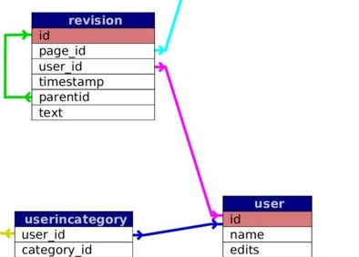
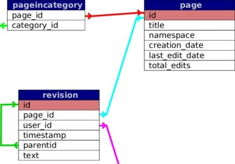
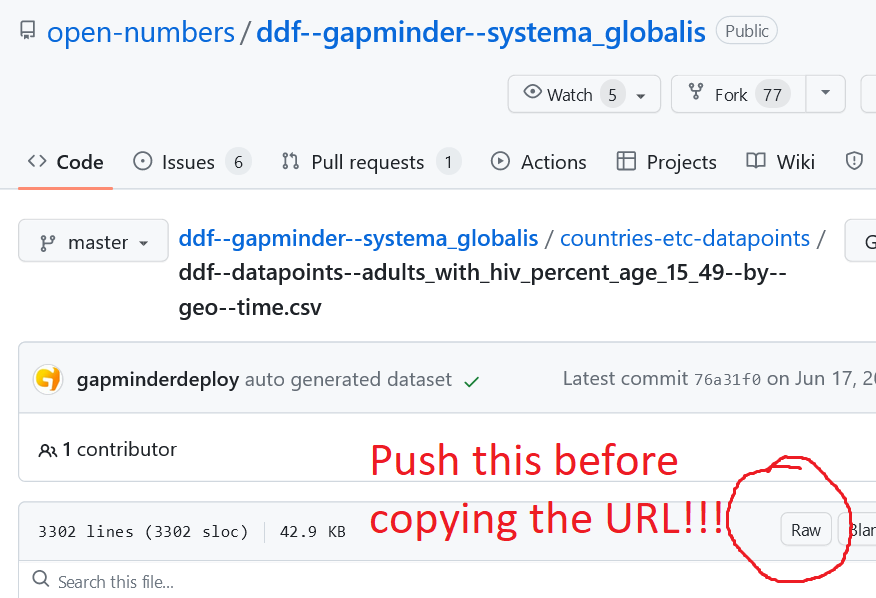

Rows: 1,704
Columns: 6
$ country <fct> "Afghanistan", "Afghanistan", "Afghanistan", "Afghanistan", …
$ continent <fct> Asia, Asia, Asia, Asia, Asia, Asia, Asia, Asia, Asia, Asia, …
$ year <int> 1952, 1957, 1962, 1967, 1972, 1977, 1982, 1987, 1992, 1997, …
$ lifeExp <dbl> 28.801, 30.332, 31.997, 34.020, 36.088, 38.438, 39.854, 40.8…
$ pop <int> 8425333, 9240934, 10267083, 11537966, 13079460, 14880372, 12…
$ gdpPercap <dbl> 779.4453, 820.8530, 853.1007, 836.1971, 739.9811, 786.1134, …Joining several data frames with dplyr
Silvie Cinková
2025-08-09
Join tables by a shared column

Revision performed by a user
Revision performed on a wiki page
You can e.g. easily generate a table with revisions of one particular page.
Connecting tables
gapminder
geo
geo <- read_csv("https://raw.githubusercontent.com/open-numbers/ddf--gapminder--fasttrack/master/ddf--entities--geo--country.csv")
geo <- geo %>% select(country, name, main_religion_2008, income_3groups)
glimpse(geo)Rows: 273
Columns: 4
$ country <chr> "abkh", "abw", "afg", "ago", "aia", "akr_a_dhe", "a…
$ name <chr> "Abkhazia", "Aruba", "Afghanistan", "Angola", "Angu…
$ main_religion_2008 <chr> NA, "christian", "muslim", "christian", "christian"…
$ income_3groups <chr> NA, "high_income", "low_income", "middle_income", N…Countries in geo vs. gapminder
Overlap in key column values not full?
[1] "Korea, Dem. Rep." "Korea, Rep." "Swaziland"
[4] "United Kingdom" "United States" "West Bank and Gaza"
[7] "Yemen, Rep." [1] "Abkhazia"
[2] "Aruba"
[3] "Anguilla"
[4] "Akrotiri and Dhekelia"
[5] "Åland"
[6] "Andorra"
[7] "Netherlands Antilles"
[8] "UAE"
[9] "Armenia"
[10] "American Samoa"
[11] "Antarctica"
[12] "Antigua and Barbuda"
[13] "Azerbaijan"
[14] "Bahamas"
[15] "Belarus"
[16] "Belize"
[17] "Bermuda"
[18] "Bouvet Island"
[19] "Barbados"
[20] "Brunei"
[21] "Bhutan"
[22] "Cocos Island"
[23] "Channel Islands"
[24] "Czechoslovakia"
[25] "Cook Is"
[26] "Cape Verde"
[27] "Christmas Island"
[28] "Cayman Islands"
[29] "Cyprus"
[30] "Northern Cyprus"
[31] "East Germany"
[32] "West Germany"
[33] "Dominica"
[34] "Eritrea and Ethiopia"
[35] "Western Sahara"
[36] "Estonia"
[37] "Fiji"
[38] "Falkland Is (Malvinas)"
[39] "French Southern and Antarctic Lands"
[40] "Clipperton"
[41] "Faeroe Islands"
[42] "Micronesia, Fed. Sts."
[43] "Guernsey"
[44] "Isle of Man"
[45] "UK"
[46] "Georgia"
[47] "Gibraltar"
[48] "Guadeloupe"
[49] "Grenada"
[50] "Greenland"
[51] "French Guiana"
[52] "Guam"
[53] "Guyana"
[54] "Heard and McDonald Islands"
[55] "Holy See"
[56] "British Indian Ocean Territory"
[57] "Jersey"
[58] "Kazakhstan"
[59] "Kyrgyz Republic"
[60] "Kiribati"
[61] "St. Kitts and Nevis"
[62] "South Korea"
[63] "United Korea (former)"
[64] "Kosovo"
[65] "Lao"
[66] "St. Lucia"
[67] "Liechtenstein"
[68] "Lithuania"
[69] "Luxembourg"
[70] "Latvia"
[71] "Macao, China"
[72] "St. Martin (French part)"
[73] "Monaco"
[74] "Moldova"
[75] "Maldives"
[76] "Marshall Islands"
[77] "North Macedonia"
[78] "Malta"
[79] "Northern Mariana Islands"
[80] "Montserrat"
[81] "Martinique"
[82] "Mayotte"
[83] "New Caledonia"
[84] "Norfolk Island"
[85] "Ngorno-Karabakh"
[86] "Niue"
[87] "Curaçao"
[88] "Nauru"
[89] "Pitcairn"
[90] "Palau"
[91] "Papua New Guinea"
[92] "North Korea"
[93] "Palestine"
[94] "Gaza Strip"
[95] "West Bank"
[96] "French Polynesia"
[97] "Qatar"
[98] "Russia"
[99] "Serbia and Montenegro"
[100] "Serbia excluding Kosovo"
[101] "South Georgia and the South Sandwich Islands"
[102] "St. Helena"
[103] "Svalbard"
[104] "Solomon Islands"
[105] "San Marino"
[106] "Somaliland"
[107] "South Ossetia"
[108] "St.-Pierre-et-Miquelon"
[109] "South Sudan"
[110] "St. Barthélemy"
[111] "St. Martin"
[112] "Suriname"
[113] "Eswatini"
[114] "Sint Maarten (Dutch part)"
[115] "Seychelles"
[116] "Turks and Caicos Islands"
[117] "Tajikistan"
[118] "Tokelau"
[119] "Turkmenistan"
[120] "Timor-Leste"
[121] "Tonga"
[122] "Transnistria"
[123] "Tuvalu"
[124] "Ukraine"
[125] "USA"
[126] "US Minor Outlying Islands"
[127] "USSR"
[128] "Uzbekistan"
[129] "St. Vincent and the Grenadines"
[130] "British Virgin Islands"
[131] "Virgin Islands (U.S.)"
[132] "Vanuatu"
[133] "Wallis et Futuna"
[134] "Samoa"
[135] "Yemen"
[136] "North Yemen (former)"
[137] "South Yemen (former)"
[138] "Yugoslavia" Control key values selection

Age at first marriage women
“https://www.gapminder.org/data/”
Age at first marriage women
library(gsheet)
a <- gsheet::construct_download_url("https://docs.google.com/spreadsheets/d/1xYQ08p5llwPR3ZK6h900LDd-J7WuXCv_FoPlksrj-eA/pub#")
firstmarriage <- gsheet::gsheet2tbl(a)
glimpse(firstmarriage)Rows: 185
Columns: 117
$ ...1 <chr> "Afghanistan", "Albania", "Algeria", "Angola", "Argentina", "Ar…
$ `1616` <dbl> NA, NA, NA, NA, NA, NA, NA, NA, NA, NA, NA, NA, NA, NA, NA, NA,…
$ `1666` <dbl> NA, NA, NA, NA, NA, NA, NA, NA, NA, NA, NA, NA, NA, NA, NA, NA,…
$ `1685` <dbl> NA, NA, NA, NA, NA, NA, NA, NA, NA, NA, NA, NA, NA, NA, NA, NA,…
$ `1710` <dbl> NA, NA, NA, NA, NA, NA, NA, NA, NA, NA, NA, NA, NA, NA, NA, NA,…
$ `1716` <dbl> NA, NA, NA, NA, NA, NA, NA, NA, NA, NA, NA, NA, NA, NA, NA, NA,…
$ `1735` <dbl> NA, NA, NA, NA, NA, NA, NA, NA, NA, NA, NA, NA, NA, NA, NA, NA,…
$ `1760` <dbl> NA, NA, NA, NA, NA, NA, NA, NA, NA, NA, NA, NA, NA, NA, NA, NA,…
$ `1766` <dbl> NA, NA, NA, NA, NA, NA, NA, NA, NA, NA, NA, NA, NA, NA, NA, NA,…
$ `1775` <dbl> NA, NA, NA, NA, NA, NA, NA, NA, NA, NA, NA, NA, NA, NA, NA, NA,…
$ `1780` <dbl> NA, NA, NA, NA, NA, NA, NA, NA, NA, NA, NA, NA, NA, NA, 24.9, N…
$ `1785` <dbl> NA, NA, NA, NA, NA, NA, NA, NA, NA, NA, NA, NA, NA, NA, NA, NA,…
$ `1791` <dbl> NA, NA, NA, NA, NA, NA, NA, NA, NA, NA, NA, NA, NA, NA, NA, NA,…
$ `1800` <dbl> NA, NA, NA, NA, NA, NA, NA, NA, NA, NA, NA, NA, NA, NA, NA, NA,…
$ `1810` <dbl> NA, NA, NA, NA, NA, NA, NA, NA, NA, NA, NA, NA, NA, NA, NA, NA,…
$ `1815` <dbl> NA, NA, NA, NA, NA, NA, NA, NA, NA, NA, NA, 12.6, NA, NA, NA, N…
$ `1825` <dbl> NA, NA, NA, NA, NA, NA, NA, NA, NA, NA, NA, NA, NA, NA, NA, NA,…
$ `1835` <dbl> NA, NA, NA, NA, NA, NA, NA, NA, NA, NA, NA, NA, NA, NA, NA, NA,…
$ `1840` <dbl> NA, NA, NA, NA, NA, NA, NA, NA, NA, NA, NA, NA, NA, NA, NA, NA,…
$ `1845` <dbl> NA, NA, NA, NA, NA, NA, NA, NA, NA, NA, NA, NA, NA, NA, NA, NA,…
$ `1855` <dbl> NA, NA, NA, NA, NA, NA, NA, NA, NA, NA, NA, NA, NA, NA, NA, NA,…
$ `1860` <dbl> NA, NA, NA, NA, NA, NA, NA, NA, NA, NA, NA, NA, NA, NA, NA, NA,…
$ `1865` <dbl> NA, NA, NA, NA, NA, NA, NA, NA, NA, NA, NA, NA, NA, NA, NA, NA,…
$ `1866` <dbl> NA, NA, NA, NA, NA, NA, NA, NA, NA, NA, NA, NA, NA, NA, NA, NA,…
$ `1870` <dbl> NA, NA, NA, NA, NA, NA, NA, NA, NA, NA, NA, NA, NA, NA, NA, NA,…
$ `1875` <dbl> NA, NA, NA, NA, NA, NA, NA, NA, NA, NA, NA, NA, NA, NA, NA, NA,…
$ `1879` <dbl> NA, NA, NA, NA, NA, NA, NA, NA, NA, NA, NA, NA, NA, NA, NA, NA,…
$ `1880` <dbl> NA, NA, NA, NA, NA, NA, NA, NA, NA, NA, NA, NA, NA, NA, NA, NA,…
$ `1885` <dbl> NA, NA, NA, NA, NA, NA, NA, NA, NA, NA, NA, NA, NA, NA, NA, NA,…
$ `1887` <dbl> NA, NA, NA, NA, NA, NA, NA, NA, NA, NA, NA, NA, NA, NA, NA, NA,…
$ `1890` <dbl> NA, NA, NA, NA, NA, NA, NA, NA, NA, NA, NA, NA, NA, NA, NA, NA,…
$ `1895` <dbl> NA, NA, NA, NA, NA, NA, NA, NA, NA, NA, NA, NA, NA, NA, NA, NA,…
$ `1897` <dbl> NA, NA, NA, NA, NA, 17.0, NA, NA, 16.2, NA, NA, NA, NA, 22.7, N…
$ `1900` <dbl> NA, NA, NA, NA, NA, NA, NA, NA, NA, NA, NA, NA, NA, NA, NA, NA,…
$ `1901` <dbl> NA, NA, NA, NA, NA, NA, NA, NA, NA, NA, NA, NA, NA, NA, NA, NA,…
$ `1903` <dbl> NA, NA, NA, NA, NA, NA, NA, NA, NA, NA, NA, NA, NA, NA, NA, NA,…
$ `1905` <dbl> NA, NA, NA, NA, NA, NA, NA, NA, NA, NA, NA, NA, NA, NA, NA, NA,…
$ `1906` <dbl> NA, NA, NA, NA, NA, NA, NA, NA, NA, NA, NA, NA, NA, NA, NA, NA,…
$ `1907` <dbl> NA, NA, NA, NA, NA, NA, NA, NA, NA, NA, NA, NA, NA, NA, NA, NA,…
$ `1910` <dbl> NA, NA, NA, NA, NA, NA, NA, NA, NA, NA, NA, NA, NA, NA, NA, NA,…
$ `1911` <dbl> NA, NA, NA, NA, NA, NA, NA, NA, NA, NA, NA, NA, NA, NA, NA, NA,…
$ `1915` <dbl> NA, NA, NA, NA, NA, NA, 24.5, NA, NA, NA, NA, NA, NA, NA, NA, N…
$ `1920` <dbl> NA, NA, NA, NA, NA, NA, 24.4, NA, NA, NA, NA, NA, NA, NA, NA, N…
$ `1921` <dbl> NA, NA, NA, NA, NA, NA, NA, NA, NA, NA, NA, NA, NA, NA, NA, NA,…
$ `1925` <dbl> NA, NA, NA, NA, NA, NA, 24.5, NA, NA, NA, NA, NA, NA, NA, NA, N…
$ `1928` <dbl> NA, NA, NA, NA, NA, NA, NA, NA, NA, NA, NA, NA, NA, NA, NA, NA,…
$ `1930` <dbl> NA, NA, NA, NA, NA, NA, 24.501, NA, NA, NA, NA, NA, NA, NA, NA,…
$ `1931` <dbl> NA, NA, NA, NA, NA, NA, NA, NA, NA, NA, NA, 12.6, NA, NA, NA, N…
$ `1935` <dbl> NA, NA, NA, NA, NA, NA, 24.5, NA, NA, NA, NA, NA, NA, NA, NA, N…
$ `1937` <dbl> NA, NA, NA, NA, NA, NA, NA, NA, NA, NA, NA, NA, NA, NA, NA, NA,…
$ `1939` <dbl> NA, NA, NA, NA, NA, NA, NA, NA, NA, NA, NA, NA, NA, NA, NA, NA,…
$ `1940` <dbl> NA, NA, NA, NA, NA, NA, 24.2, NA, NA, NA, NA, NA, NA, NA, NA, N…
$ `1941` <dbl> NA, NA, NA, NA, NA, NA, NA, NA, NA, NA, NA, 13.7, NA, NA, NA, N…
$ `1942` <dbl> NA, NA, NA, NA, NA, NA, NA, NA, NA, NA, NA, NA, NA, NA, NA, NA,…
$ `1943` <dbl> NA, NA, NA, NA, NA, NA, NA, NA, NA, NA, NA, NA, NA, NA, NA, NA,…
$ `1944` <dbl> NA, NA, NA, NA, NA, NA, NA, NA, NA, NA, NA, NA, NA, NA, NA, NA,…
$ `1945` <dbl> NA, NA, NA, NA, NA, NA, 23.3, NA, NA, NA, NA, NA, NA, NA, NA, N…
$ `1946` <dbl> NA, 21.52, NA, NA, NA, NA, NA, NA, NA, NA, NA, NA, NA, NA, NA, …
$ `1947` <dbl> NA, NA, NA, NA, NA, NA, NA, 25.9, NA, NA, NA, NA, NA, NA, NA, N…
$ `1948` <dbl> NA, NA, 20, NA, NA, NA, NA, NA, NA, NA, NA, NA, NA, NA, NA, NA,…
$ `1949` <dbl> NA, NA, NA, NA, NA, NA, NA, NA, NA, NA, NA, NA, NA, NA, NA, NA,…
$ `1950` <dbl> NA, NA, NA, NA, NA, NA, 22.6, 25.3, NA, NA, NA, NA, NA, NA, NA,…
$ `1951` <dbl> NA, NA, NA, NA, NA, NA, NA, NA, NA, NA, NA, 14.4, NA, NA, NA, N…
$ `1952` <dbl> NA, NA, NA, NA, NA, NA, NA, NA, NA, NA, NA, NA, NA, NA, NA, NA,…
$ `1953` <dbl> NA, NA, NA, NA, NA, NA, NA, NA, NA, NA, NA, NA, NA, NA, NA, NA,…
$ `1954` <dbl> NA, NA, 19.60, NA, NA, NA, NA, NA, NA, NA, NA, NA, NA, NA, 23.3…
$ `1955` <dbl> NA, 21.0, NA, NA, NA, NA, 22.1, NA, NA, NA, NA, NA, NA, NA, NA,…
$ `1956` <dbl> NA, NA, NA, NA, NA, NA, NA, NA, NA, NA, NA, NA, NA, NA, NA, NA,…
$ `1957` <dbl> NA, NA, NA, NA, NA, NA, NA, NA, NA, NA, NA, NA, NA, NA, NA, NA,…
$ `1958` <dbl> NA, NA, NA, NA, NA, NA, NA, NA, NA, NA, NA, NA, NA, NA, NA, NA,…
$ `1959` <dbl> NA, NA, NA, NA, NA, NA, NA, NA, NA, NA, NA, NA, NA, NA, NA, NA,…
$ `1960` <dbl> NA, NA, NA, NA, NA, NA, 21.60, 24.01, NA, NA, NA, NA, NA, NA, 2…
$ `1961` <dbl> NA, NA, NA, NA, NA, NA, NA, NA, NA, NA, NA, 13.9, NA, NA, NA, N…
$ `1962` <dbl> NA, NA, NA, NA, NA, NA, NA, NA, NA, NA, NA, NA, NA, NA, NA, NA,…
$ `1963` <dbl> NA, NA, NA, NA, NA, NA, NA, NA, NA, NA, NA, NA, NA, NA, NA, NA,…
$ `1964` <dbl> NA, NA, NA, NA, NA, NA, NA, NA, NA, NA, NA, NA, NA, NA, NA, NA,…
$ `1965` <dbl> NA, NA, NA, NA, NA, NA, 21.2, NA, NA, NA, NA, 14.8, NA, NA, NA,…
$ `1966` <dbl> NA, NA, 18, NA, NA, NA, NA, NA, NA, NA, NA, NA, NA, NA, NA, NA,…
$ `1967` <dbl> NA, NA, NA, NA, NA, NA, NA, NA, NA, NA, NA, NA, NA, NA, NA, NA,…
$ `1968` <dbl> NA, NA, NA, NA, NA, NA, NA, NA, NA, NA, NA, NA, NA, NA, NA, NA,…
$ `1969` <dbl> NA, NA, NA, NA, NA, NA, NA, NA, NA, NA, NA, NA, NA, NA, NA, NA,…
$ `1970` <dbl> NA, 21.50000, 19.30000, 19.38657, 23.10862, NA, 21.10000, 22.88…
$ `1971` <dbl> NA, NA, NA, NA, NA, NA, NA, NA, NA, NA, NA, NA, NA, NA, NA, NA,…
$ `1972` <dbl> NA, NA, NA, NA, NA, NA, NA, NA, NA, NA, NA, NA, NA, NA, NA, NA,…
$ `1973` <dbl> NA, NA, NA, NA, NA, NA, NA, NA, NA, NA, NA, NA, NA, NA, NA, NA,…
$ `1974` <dbl> NA, NA, NA, NA, NA, NA, NA, NA, NA, NA, NA, 16.6, NA, NA, NA, N…
$ `1975` <dbl> NA, NA, NA, NA, NA, NA, NA, NA, NA, NA, NA, 16.40000, NA, NA, N…
$ `1976` <dbl> NA, NA, NA, NA, NA, NA, NA, NA, NA, NA, NA, NA, NA, NA, NA, NA,…
$ `1977` <dbl> NA, NA, 20.9, NA, NA, NA, NA, NA, NA, NA, NA, NA, NA, NA, NA, N…
$ `1978` <dbl> NA, NA, NA, NA, NA, NA, NA, NA, NA, NA, NA, NA, NA, NA, NA, NA,…
$ `1979` <dbl> 17.83968, NA, NA, NA, NA, NA, NA, NA, NA, NA, NA, NA, NA, NA, N…
$ `1980` <dbl> NA, NA, NA, NA, NA, NA, NA, 23.15, NA, NA, NA, 16.40, NA, NA, 2…
$ `1981` <dbl> NA, NA, NA, NA, NA, NA, NA, NA, NA, NA, NA, NA, NA, NA, NA, NA,…
$ `1982` <dbl> NA, NA, NA, NA, NA, NA, NA, NA, NA, NA, NA, 17.7, NA, NA, NA, N…
$ `1983` <dbl> NA, NA, NA, NA, NA, NA, NA, NA, NA, NA, NA, NA, NA, NA, NA, NA,…
$ `1984` <dbl> NA, NA, NA, NA, NA, NA, NA, NA, NA, NA, NA, NA, NA, NA, NA, NA,…
$ `1985` <dbl> NA, NA, NA, NA, NA, NA, NA, NA, NA, NA, NA, NA, NA, NA, NA, NA,…
$ `1986` <dbl> NA, NA, NA, NA, NA, NA, NA, NA, NA, NA, NA, NA, NA, NA, NA, NA,…
$ `1987` <dbl> NA, NA, 23.8, NA, NA, NA, NA, NA, NA, NA, NA, NA, NA, NA, NA, N…
$ `1988` <dbl> NA, NA, NA, NA, NA, NA, NA, NA, NA, NA, NA, NA, NA, NA, NA, NA,…
$ `1989` <dbl> NA, 22.47, NA, NA, NA, NA, NA, NA, NA, NA, NA, NA, NA, NA, 23.6…
$ `1990` <dbl> NA, NA, NA, NA, NA, NA, NA, 24.9, NA, NA, NA, NA, NA, NA, NA, N…
$ `1991` <dbl> NA, NA, NA, NA, NA, NA, NA, NA, NA, NA, NA, NA, NA, NA, NA, NA,…
$ `1992` <dbl> NA, NA, 25.5, NA, NA, NA, NA, NA, NA, NA, NA, NA, NA, NA, NA, N…
$ `1993` <dbl> NA, NA, NA, NA, NA, NA, NA, NA, NA, NA, NA, NA, NA, NA, NA, NA,…
$ `1994` <dbl> NA, NA, NA, NA, NA, NA, NA, NA, NA, NA, NA, NA, NA, NA, NA, NA,…
$ `1995` <dbl> NA, NA, NA, NA, NA, NA, NA, NA, NA, NA, NA, NA, NA, NA, NA, NA,…
$ `1996` <dbl> NA, NA, NA, NA, NA, NA, NA, NA, NA, NA, NA, NA, NA, NA, NA, NA,…
$ `1997` <dbl> NA, NA, NA, NA, NA, NA, NA, NA, NA, NA, NA, NA, NA, NA, NA, NA,…
$ `1998` <dbl> NA, NA, 27.6, NA, NA, NA, NA, NA, NA, NA, NA, NA, NA, NA, NA, N…
$ `1999` <dbl> NA, NA, NA, NA, NA, NA, NA, NA, NA, NA, NA, NA, NA, NA, NA, NA,…
$ `2000` <dbl> NA, NA, NA, NA, NA, NA, NA, NA, NA, NA, NA, NA, NA, NA, NA, NA,…
$ `2001` <dbl> NA, NA, NA, NA, NA, NA, NA, NA, NA, NA, NA, NA, NA, NA, NA, NA,…
$ `2002` <dbl> NA, NA, NA, NA, NA, NA, NA, NA, NA, NA, NA, NA, NA, NA, NA, NA,…
$ `2003` <dbl> NA, NA, NA, NA, NA, NA, NA, NA, NA, NA, NA, NA, NA, NA, NA, NA,…
$ `2004` <dbl> NA, NA, NA, NA, NA, NA, NA, NA, NA, NA, NA, NA, NA, NA, NA, NA,…
$ `2005` <dbl> 17.83968, 23.32651, 29.60000, NA, 23.26396, 22.98603, 28.93126,…Gapminder datasets in CSV
https://github.com/open-numbers/ddf–gapminder–systema_globalis/tree/master/countries-etc-datapoints
When your observations are not unique
# A tibble: 4 × 3
name birthplace math_test
<chr> <chr> <dbl>
1 John Smith Honolulu 72
2 Mary Brown Milan 40
3 John Smith Prague 25
4 Helene Field Beijing 91Possible rescue: unique by several columns
No chance to join
If you cannot find anything that makes them unique.
maths2 <- select(maths, -birthplace)
social_sciences2 <- select(social_sciences, !birthplace)
left_join(maths2, social_sciences2, by = "name")Warning in left_join(maths2, social_sciences2, by = "name"): Detected an unexpected many-to-many relationship between `x` and `y`.
ℹ Row 1 of `x` matches multiple rows in `y`.
ℹ Row 2 of `y` matches multiple rows in `x`.
ℹ If a many-to-many relationship is expected, set `relationship =
"many-to-many"` to silence this warning.# A tibble: 6 × 3
name math_test soc_test
<chr> <dbl> <dbl>
1 John Smith 72 5
2 John Smith 72 76
3 Mary Brown 40 12
4 John Smith 25 5
5 John Smith 25 76
6 Helene Field 91 49dplyr::join help
explore the arguments
relationshipmultipleunmatched
Data with typos in the key column(s)
libraries
fuzzyjoinalong withstringdist(used byfuzzyjoin)DataCamp course Intermediate Regular Expressions in R > Similarities Between Strings
JRC Names
Steinberger Ralf, Bruno Pouliquen, Mijail Kabadjov, Jenya Belyaeva & Erik van der Goot (2011).JRC-Names: A freely available, highly multilingual named entity resource. Proceedings of the 8th International Conference Recent Advances in Natural Language Processing (RANLP). Hissar, Bulgaria, 12-14 September 2011.
Matching on Levenschtein Distance
joinJRC_lv <- fuzzyjoin::stringdist_left_join(x = jrc_1, y = jrc_2,
distance_col = "distance",
by = "name",
ignore_case = TRUE,
method = "lv",
#q = 1,
max_dist = 2) %>%
relocate(name.x, name.y, distance)
joinJRC_lv# A tibble: 20 × 11
name.x name.y distance id.x PersOrg.x n.x index_id.x id.y PersOrg.y n.y
<chr> <chr> <dbl> <int> <chr> <int> <int> <int> <chr> <int>
1 John+… John+… 1 41 P 4 1 41 P 4
2 Richa… <NA> NA 46 P 4 1 NA <NA> NA
3 Adam+… Adam+… 2 56 P 4 1 56 P 4
4 Chris… CHRIS… 0 92 P 4 1 92 P 4
5 Dan+S… <NA> NA 123 P 4 1 NA <NA> NA
6 Peter… PETER… 0 159 P 4 1 159 P 4
7 Rober… Rober… 1 173 P 4 1 173 P 4
8 Shauk… Shauk… 1 174 P 4 1 174 P 4
9 Gerha… Gerha… 1 196 P 4 1 196 P 4
10 Johan… JOHAN… 0 202 P 4 1 202 P 4
11 Rolan… ROLAN… 0 215 P 4 1 215 P 4
12 Jesus… Jesús… 1 231 P 4 1 231 P 4
13 Marti… Marti… 1 241 P 4 1 241 P 4
14 Klaus… Klaus… 1 252 P 4 1 252 P 4
15 Phili… Phill… 1 253 P 4 1 253 P 4
16 Umber… UMBER… 0 259 P 4 1 259 P 4
17 Thoma… <NA> NA 274 P 4 1 NA <NA> NA
18 Marco… MARCO… 0 284 P 4 1 284 P 4
19 Berna… BERNA… 0 292 P 4 1 292 P 4
20 Seamu… Séamu… 1 339 P 4 1 339 P 4
# ℹ 1 more variable: index_id.y <int>Matching on qgrams
q-grams aka n-grams: rolling substrings of a given length
bigrams (2-grams) of fish: fi - is - sh
trigrams (3-grams) of fish: fis - ish
stringdist_semi_join(x = jrc_1, y = jrc_2,
distance_col = "distance",
by = "name",
ignore_case = TRUE,
method = "qgram",
q = 3,
max_dist = 5)# A tibble: 15 × 5
id PersOrg name n index_id
<int> <chr> <chr> <int> <int>
1 41 P John+Ashcroft 4 1
2 56 P Adam+Ereli 4 1
3 92 P Chris+Patten 4 1
4 159 P Peter+Hain 4 1
5 173 P Roberto+Castelli 4 1
6 174 P Shaukat+Sultan 4 1
7 202 P Johannes+Rau 4 1
8 215 P Roland+Koch 4 1
9 241 P Martin+Bartenstein 4 1
10 252 P Klaus+Zumwinkel 4 1
11 253 P Philip+Green 4 1
12 259 P Umberto+Agnelli 4 1
13 284 P Marco+Follini 4 1
14 292 P Bernard+Thibault 4 1
15 339 P Seamus+Brennan 4 1stringdist_anti_join(x = jrc_1, y = jrc_2,
distance_col = "distance",
by = "name",
ignore_case = TRUE,
method = "qgram",
q = 3,
max_dist = 5)# A tibble: 5 × 5
id PersOrg name n index_id
<int> <chr> <chr> <int> <int>
1 46 P Richard+Boucher 4 1
2 123 P Dan+Senor 4 1
3 196 P Gerhard+Mayer+Vorfelder 4 1
4 231 P Jesus+Caldera 4 1
5 274 P Thomas+Kean 4 1Matching on cosine distance between qgrams
joinJRC12_cosine <- fuzzyjoin::stringdist_inner_join(x = jrc_1, y = jrc_2, distance_col = "distance",
by = "name", ignore_case = TRUE,
method = "cosine",
q = 1,
max_dist = 0.15,
) %>% relocate(name.x, name.y, distance)
joinJRC12_cosine# A tibble: 20 × 11
name.x name.y distance id.x PersOrg.x n.x index_id.x id.y PersOrg.y n.y
<chr> <chr> <dbl> <int> <chr> <int> <int> <int> <chr> <int>
1 John+… John+… 0.0277 41 P 4 1 41 P 4
2 Richa… Rick+… 0.1 46 P 4 1 46 P 4
3 Adam+… Adam+… 0.0551 56 P 4 1 56 P 4
4 Chris… CHRIS… 0 92 P 4 1 92 P 4
5 Dan+S… Danie… 0.0955 123 P 4 1 123 P 4
6 Peter… PETER… 0 159 P 4 1 159 P 4
7 Rober… Rober… 0.0186 173 P 4 1 173 P 4
8 Shauk… Shauk… 0.0383 174 P 4 1 174 P 4
9 Gerha… Gerha… 0.0165 196 P 4 1 196 P 4
10 Johan… JOHAN… 0 202 P 4 1 202 P 4
11 Rolan… ROLAN… 0 215 P 4 1 215 P 4
12 Jesus… Jesús… 0.0526 231 P 4 1 231 P 4
13 Marti… Marti… 0.0105 241 P 4 1 241 P 4
14 Klaus… Klaus… 0.0230 252 P 4 1 252 P 4
15 Phili… Phill… 0.0227 253 P 4 1 253 P 4
16 Umber… UMBER… 0 259 P 4 1 259 P 4
17 Thoma… Tom+K… 0.117 274 P 4 1 274 P 4
18 Marco… MARCO… 0 284 P 4 1 284 P 4
19 Berna… BERNA… 0 292 P 4 1 292 P 4
20 Seamu… Séamu… 0.0392 339 P 4 1 339 P 4
# ℹ 1 more variable: index_id.y <int>